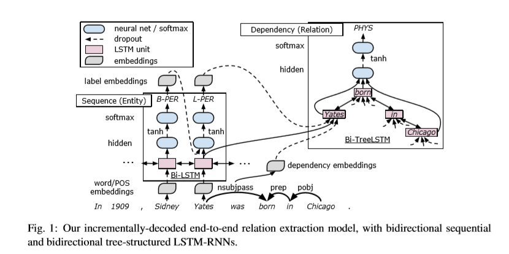
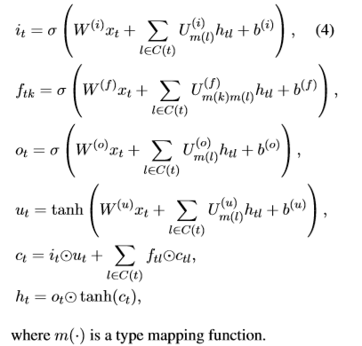
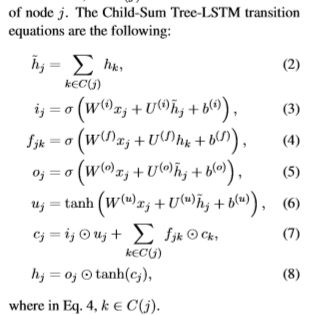
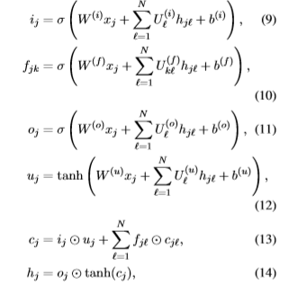
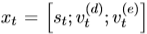
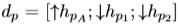

2016 End to End Relation Extraction using LSTMs on Sequences and Tree Structures
Author: Makoto Miwa， Mohit Bansal
motivation
to capture both the tree substructure information and dependency tree structure information by stacking bidirectional tree-structured LSTM-RNNs on bidirectional sequential LSTM-RNNs.This allows our model to jointly represent both entities and relations with shared parameters in a singele model
related work
- most of the previous method are pipeline but relation interacts with entity information.
- to represent relations and entities: RNN and CNN
- for relation classification, LSTM is even worse than CNN, and the author thinks that they do not model entities and relations jointly
- dependencies are not enough to predict
- structured prediction methods are state-of-the-art on several corpora
paragraph architecture: - about the network : CRF on bi-lsm performs comparably to the state of the art methods in POS tagging, chunking and NER
- about relation classification:
- about the tree structured LSTM-RNNs
method
- first detect entities and then extract the relations.
- incorporates two enhancements into training: entity pretraining and scheduled sampling.

entity deteciton:
treat entity detection as a sequence labeling task. (BILOU) use greedy to label(beam search does not help). use the predicted label of a word to predict the label of the next word so as to take label dependencies into account.
dependency layer:
make use of argument nodes near the bottom of the tree. and note that the two variants of tree-structured LSTM-RNNs are not able to represent the target structures which have a variable number of typed children.
child-sum:
N-ary Tree:
note that the N-ary Tree fixes the number of child while the variant did not，and the variant seems consider the different type of child nodes
SP-Tree
SubTree
FullTree
(not very clear, to be supplemented)
stacking:
 St is the hidden state vecor in the sequence layer, Vt(d) is the type embedding of dependency, Vt(e) is the label embedding.
Relation Classification:
use the last words of detected entities to represent (L or U) and treat a pair as negative relation when wrongly label the entity or the pair has no relation.
the relation candidate vector is constructed as the concatenation of

hpa is the hidden state of the top LSTM unist
hp1, hp2 are the hiddent state of the target words
(all in top-down tree)
problem:
- the sequence layer to the input is not direct
- use words to represent entities which can not fully use the entity information
to alleviate the the problem, here they use the concatenation of the hidden state vector.
there are two labels in bi-directional network, the author select the one with bigger confidence.
Training:
BPTT，Adam with gradient clipping，L2-regularization，dropout，entity pretraining，scheduled sampling
what is scheduled sampling? (Bengio et al.) : whether use the ground truth or the predicted label to predict the next token in sequence generation
dataset
ACE05: 7 coarse-grained entity types and 6 coarse-grained relation types
ACE04: 7 coarse-grained relation types
SemEval-2010 Task 8: 9 relation types and a tenth Ohter
result
it shows that selecting the appropriate tree structure representation of the input is more important than the choice of the LSTM-RNNN structure on the input.
pros
- no RNN-based relation classification model simultaneously the sequence and tree info.
- solid experiment result, considering lots of factors
inspiration:
- does the number of relation type affects the result since the score on nyt data is lower
- the pretrain is just like the pipeline work, but let the two stage share the parameters.
文章标题:2016 End to End Relation Extraction using LSTMs on Sequences and Tree Structures
本文作者:MonoJett
发布时间:2018-09-28, 14:31:09
最后更新:2018-09-28, 14:30:16
原始链接:http://monojett.github.io/2018/09/28/2016 End to End Relation Extraction using LSTMs on Sequences and Tree Structures/版权声明: "署名-非商用-相同方式共享 4.0" 转载请保留原文链接及作者。